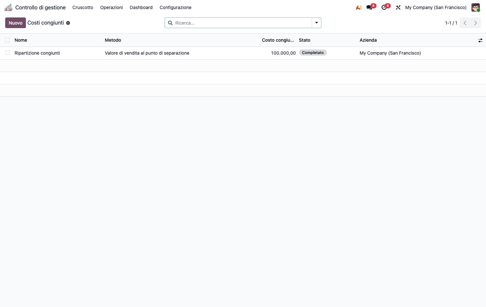
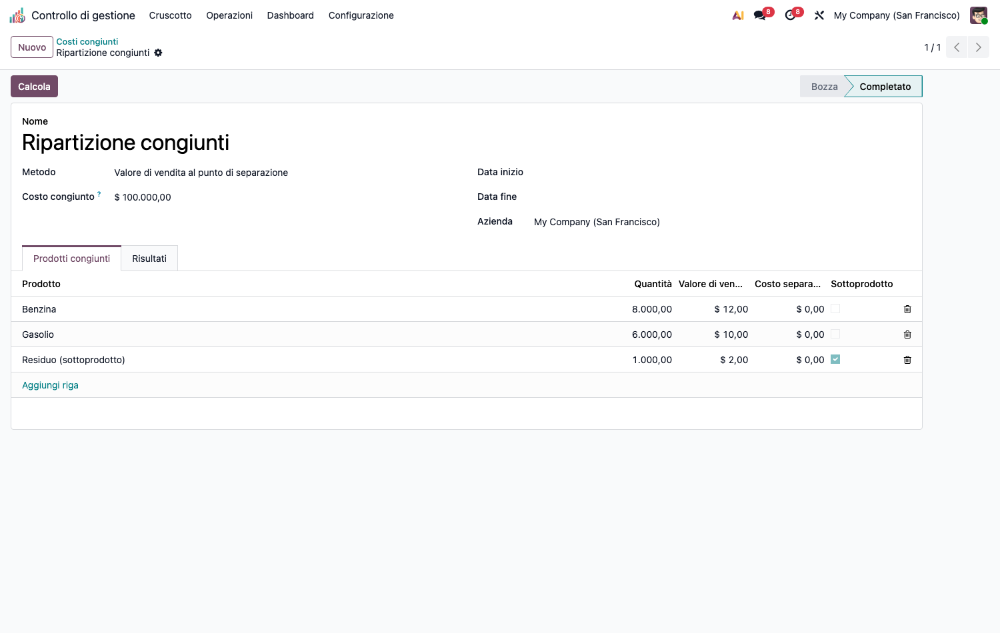
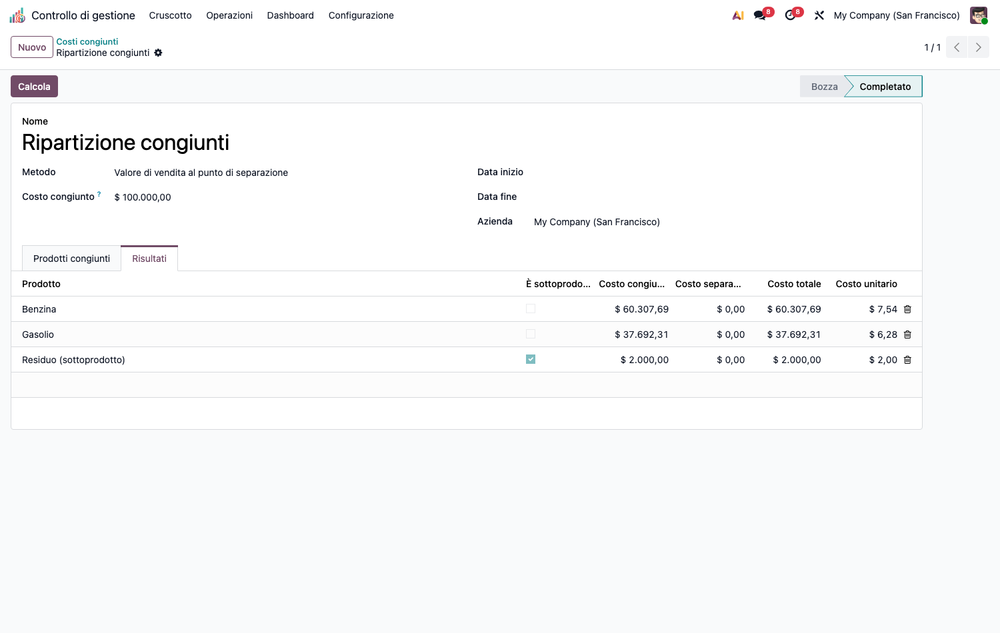

<section class="oe_container">
<div class="oe_row oe_spaced">
<div class="oe_span12">
<h1>CMC – Costi Congiunti (cmc_joint_costs)</h1>
<p>Modulo capillare della suite CMC. Dipende da <code>cmc_base</code> e <code>product</code>.</p>
<h2>Obiettivo</h2>
<p>Ripartire un <strong>costo congiunto</strong> di produzione tra <strong>prodotti principali</strong> e <strong>sottoprodotti</strong>. Quattro metodi:</p>
<ul><li><strong>Quantità fisiche</strong></li><li><strong>Valore di vendita al punto di separazione</strong> (<em>sales value at split-off</em>)</li><li><strong>NRV</strong> (valore netto di realizzo)</li><li><strong>Margine lordo costante</strong> (<em>constant gross margin</em>)</li></ul>
<p>I <strong>sottoprodotti</strong> sono valorizzati a NRV = max(qty·prezzo − costo separabile, 0) e <strong>nettati</strong> dal pool prima di ripartire ai prodotti principali.</p>
<p></p>
<h2>Configurazione (step-by-step)</h2>
<ol><li>Installa <code>cmc_joint_costs</code> (richiede <code>cmc_base</code>).</li><li>Prepara i <strong>prodotti</strong> coinvolti (congiunti + eventuali sottoprodotti) in anagrafica.</li><li>Nessuna altra configurazione: i dati si inseriscono direttamente nel calcolo.</li></ol>
<h2>Utilizzo (step-by-step)</h2>
<ol><li><strong>Calcolo costi › Costi congiunti › Ripartizione congiunti</strong> → <strong>Nuovo</strong>.</li></ol>
<p></p>
<ol><li>Inserisci il <strong>Costo congiunto</strong> totale (input manuale) e scegli il <strong>Metodo</strong> di ripartizione.</li><li>Aggiungi le righe prodotto: quantità, valore di vendita unitario, costo separabile. Marca <strong>Sottoprodotto</strong> dove applicabile.</li><li>Premi <strong>Calcola</strong>. Il tab <strong>Risultati</strong> mostra costo allocato e costo unitario [(allocato + separabile) / quantità] per prodotto.</li></ol>
<p></p>
<h2>Note</h2>
<ul><li>Conservazione via <code>largest_remainder</code> (physical/sales/nrv); <em>constant_gm</em> mette il residuo sul prodotto a maggior fatturato.</li><li><strong>Guardie sui casi degeneri</strong> (falliscono con messaggio, non in silenzio): NRV di sottoprodotti che eccede il pool, base peso ≤ 0, fatturato totale 0, run tutto-sottoprodotti.</li></ul>
</div>
</div>
</section>
